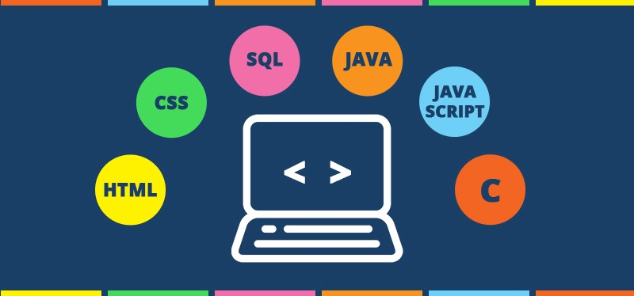

SUMMARY
I am studying at Faculty of Computer Science in University of Indonesia
Majoring Information System. I really love to code and create something
When I am doing something that I loved, I will try to do as best as I can.
I have interest in mobile app and web development and I have a dream one day
I can be advanced web and app developer. I have high spirit to learn new things, and I am a quick learner too
EDUCATIONAL BACKGROUND
2001 - 2007
2007 - 2010
2010 - 2013
2015 - 2019
Hosana Elementary School
Hosana Junior High School
SMA Negeri 7 Medan High School
University Potensi Utama of Medan
SKILLS

ABILITIES
SOCIAL MEDIA